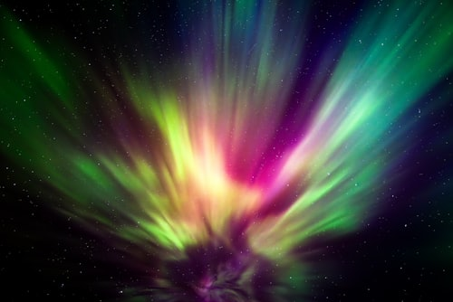

Where exactly is aurora borealis?
The northern lights most commonly occur within the geographic area beneath the auroral oval. It encompasses
latitudes between 60 and 75 degrees and takes in Iceland, northern parts of Sweden, Finland, Norway, Russia,
Canada and Alaska as well as southern Greenland.